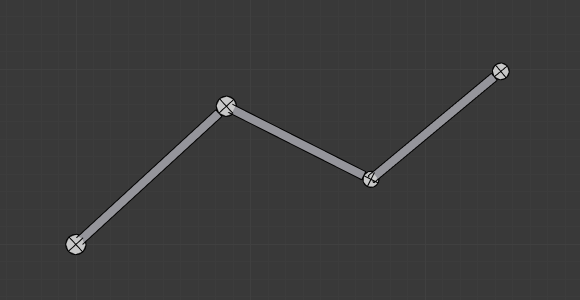
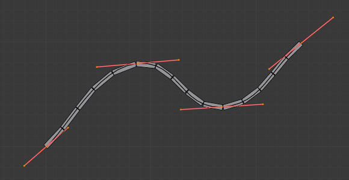
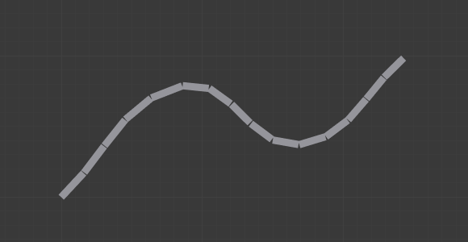
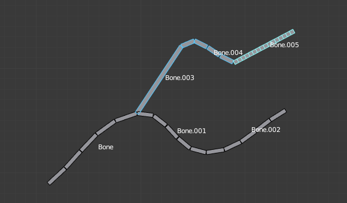
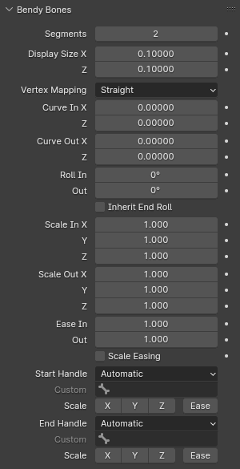
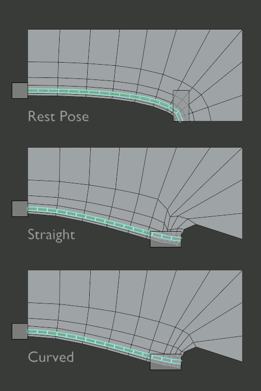
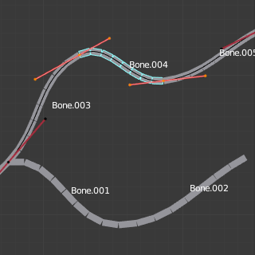
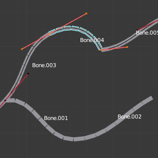
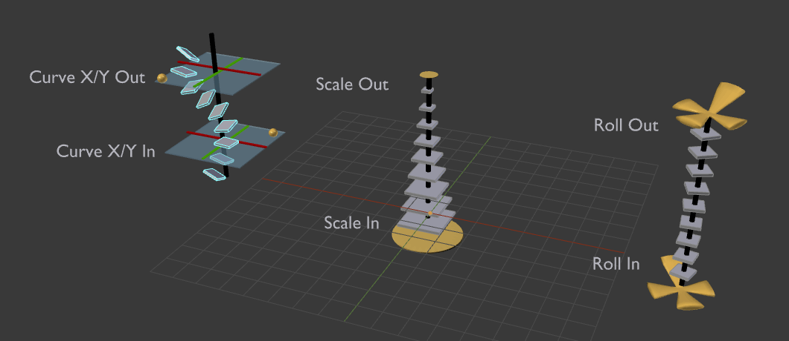

Bendy Bones¶
Tham khảo
- Mode:
All Modes
- Panel:
Bendy Bones (B-Bones) là cách dễ dàng để thay thế các chuỗi dài gồm nhiều bone cứng nhỏ. Một trường hợp sử dụng phổ biến của bone cong là mô hình hóa cột sống hoặc bone khuôn mặt.
Chi tiết kỹ thuật¶
Blender xử lý bone như một đoạn của đường cong Bézier đi qua các khớp của bone. Mỗi Segment sẽ cong và roll theo đường cong vô hình này, đại diện cho một điểm chia của đường cong Bézier. Các điểm điều khiển ở hai đầu đường cong chính là hai đầu mút của bone. Hình dạng của B-Bone có thể được điều khiển bằng một loạt thuộc tính, hoặc gián tiếp thông qua các bone lân cận (tức bone con đầu tiên và parent). Các thuộc tính này dựng các handle ở hai đầu bone để điều khiển độ cong.
Khi dùng B-bone làm đích (target) của constraint, Data ID cung cấp một tùy chọn để bám theo độ cong.
Ghi chú
Tuy nhiên, nếu bone được dùng làm target thay vì để biến dạng geometry, chỉ các constraint Armature và Copy Transforms là dùng đầy đủ phép biến đổi, bao gồm cả roll và scale.
Display¶
Bạn chỉ có thể thấy các segment này khi bone được hiển thị kiểu B-bone.
Khi không hiển thị kiểu B-Bone, bone luôn được vẽ thành các thanh cứng, dù các segment của bone vẫn tồn tại và vẫn có hiệu lực. Điều này nghĩa là ngay cả khi hiển thị ví dụ Octahedron, nếu một số bone trong chuỗi có nhiều segment, chúng vẫn biến dạng geometry một cách mượt mà.
Rest Pose¶
Hình dạng ban đầu của B-Bone có thể được định nghĩa trong Edit Mode như là rest pose của bone đó. Điều này hữu ích cho các chi tiết khuôn mặt cong như lông mày cong hay miệng cong.
B-Bone có hai bộ thuộc tính Bendy Bone -- một cho Edit Mode (tức Rest Pose/Base Rig) và một cho Pose Mode -- các giá trị của chúng được cộng hoặc nhân lại với nhau để cho ra phép biến đổi cuối cùng.
Ví dụ¶
 Các bone chỉ có một segment trong Edit Mode.¶ |
 Đường cong Bézier chồng lên chuỗi, với các handle đặt tại khớp của bone.¶ |
 Cùng armature đó trong Object Mode.¶ |
Trong Hình Các bone chỉ có một segment trong Edit Mode., chúng tôi đã nối ba bone, mỗi bone gồm năm segment.
Nhìn vào Hình Cùng armature đó trong Object Mode., ta có thể thấy các segment của bone "hòa" vào nhau mượt mà thế nào, kể cả đối với roll.

Một armature trong Pose Mode, hiển thị B-Bone: Bone.003 có một segment, Bone.004 có bốn, và Bone.005 có mười sáu.¶
Tùy chọn¶

Panel Bendy Bones.¶
- Segments
Số segment mà bone đã cho được chia thành. Segment là những bone con nhỏ, cứng và được liên kết, nội suy giữa root và tip. Cài đặt này càng cao thì bone "uốn" càng mượt, nhưng việc tính toán pose càng nặng.
- Display Size X, Z
Điều khiển độ dày hiển thị của các segment bone khi armature được render ở chế độ B-Bones.
- Vertex Mapping
Điều khiển cách các vertices được gán trọng số cho từng segment của B-Bone khi biến dạng:
- Straight:
Một phép ánh xạ nhanh, hoạt động tốt với B-Bone có rest pose thẳng hoặc cong nhẹ.
- Curved:
Một phép ánh xạ chậm hơn, cải thiện biến dạng cho B-Bone có rest pose cong mạnh. Nên dùng có chọn lọc khi cần.

So sánh ánh xạ vertex Straight và Curved trên một B-Bone có rest pose cong mạnh.¶

- Curve In/Out X, Y, Z
Áp dụng offset lên vị trí handle của đường cong, trên mặt phẳng vuông góc với trục chính (Y) của bone. Kết quả là handle dịch chuyển theo từng trục (XZ) ra xa vị trí ban đầu của nó, khiến đường cong uốn lại.
- Roll In, Out
Giá trị roll (hay độ xoắn quanh trục Y chính của bone) được nội suy theo từng segment, giữa giá trị roll đầu và cuối. Nó được áp dụng như một offset xoay chồng lên phép xoay do các bone handle xác định.
- Inherit End Roll
Nếu bật, giá trị Roll Out của bone Start Handle (mặc định là parent được connected) sẽ ngầm được cộng vào cài đặt Roll In của bone hiện tại.
- Scale In/Out X, Y, Z
Các hệ số scale điều chỉnh độ dày của từng segment theo trục X và Z, hoặc tạo khoảng cách không đều dọc trục Y. Tương tự Roll, giá trị được nội suy theo từng segment.
Vì mọi segment vẫn được scale đều theo hướng Y để khớp với chiều dài thực của đường cong, nên thực tế chỉ tỉ số giữa Scale In Y và Scale Out Y mới quan trọng.
- Ease In, Out
Các ô số Ease In/Out thay đổi "độ dài" của handle Bézier "auto" để điều khiển "root handle" và "tip handle" của bone. Các giá trị này tỉ lệ với độ dài mặc định, vốn tất nhiên tự động thay đổi tùy vào độ dài bone, góc với handle tham chiếu, v.v.
Mặc dù easing là giá trị kiểu scale, hai phiên bản Edit Mode và Pose Mode của giá trị này được cộng lại với nhau, nên mặc định chúng có giá trị khởi đầu tương ứng là 1 và 0.
Ví dụ cài đặt Ease In/Out, với đường cong Bézier được dựng hữu hình.¶ 
Bone.004 với In và Out mặc định (1.0).¶

Bone.004 với In bằng 2.0, và Out bằng 0.0.¶


- Scale Easing
Nếu bật, các giá trị easing cuối cùng sẽ ngầm được nhân với giá trị Scale Y tương ứng.
Custom Handles¶
B-Bone có thể dùng các bone tùy chỉnh làm bone handle tham chiếu, thay vì chỉ dùng các bone parent/con được connected.
- Start/End Handle
Chỉ định kiểu handle từ các lựa chọn sau:
- Automatic:
Parent được connected (hoặc bone con connected đầu tiên) của bone được chọn làm handle. Tính toán được thực hiện theo kiểu handle Absolute bên dưới.
- Absolute:
Handle Bézier được điều khiển bởi vị trí của head (tail) của bone handle so với head (tail) của bone hiện tại. Lưu ý rằng để điều này hoạt động, phải có khoảng cách khác không giữa các bone này. Nếu handle cũng là một B-Bone, việc xử lý bổ sung sẽ được áp dụng để làm mượt thêm sự chuyển tiếp, với giả định các bone thực tế tạo thành một chuỗi.
- Relative:
Handle Bézier được điều khiển bởi offset của head (tail) của bone handle so với rest pose của nó. Không khuyến khích dùng kiểu này do các vấn đề về ổn định số học khi offset gần bằng không.
- Tangent:
Handle Bézier được điều khiển bởi hướng của bone handle, không phụ thuộc vào vị trí của nó.
- Custom Handle
Với các kiểu khác Automatic, phải tự tay chọn một bone để dùng làm handle. Chuyển sang kiểu custom handle mà không chọn bone nào có thể được dùng để vô hiệu hóa handle một cách hữu hiệu.
Hai bone tham chiếu lẫn nhau làm handle là hợp lệ -- sự tương quan này được áp dụng trong các chuỗi được connected với handle Automatic.
- Scale X/Y/Z/Ease
Nếu bật, các giá trị Scale và/hoặc Ease cuối cùng sẽ được nhân với các kênh scale cục bộ tương ứng của bone handle. Bước này được áp dụng độc lập với Scale Easing và không tương tác với nó, tức là bật Y và Scale Easing không thay thế công tắc Ease. Các công tắc này là phương án thay thế hiệu quả hơn cho tới tám driver đơn giản, dùng để truyền dữ liệu scale của segment từ các bone handle vào các thuộc tính tùy chọn của B-Bone.

Trực quan hóa các thuộc tính của Bendy Bones.¶
Từ trái sang: 1) Offset Curve X/Y, 2) Scale In/Out, 3) Roll In/Out